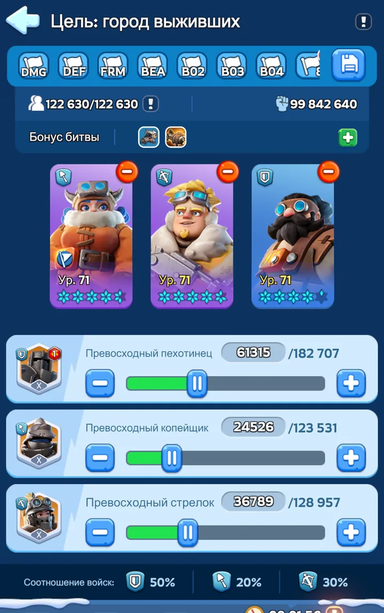
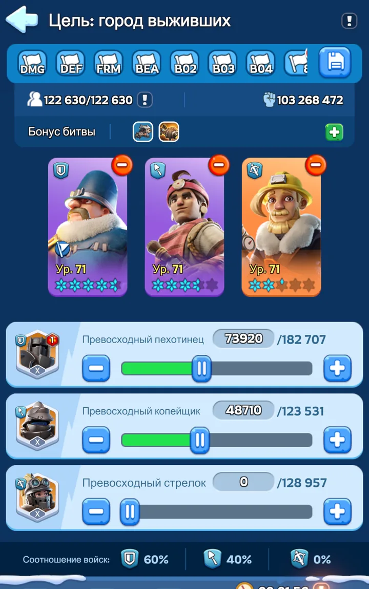
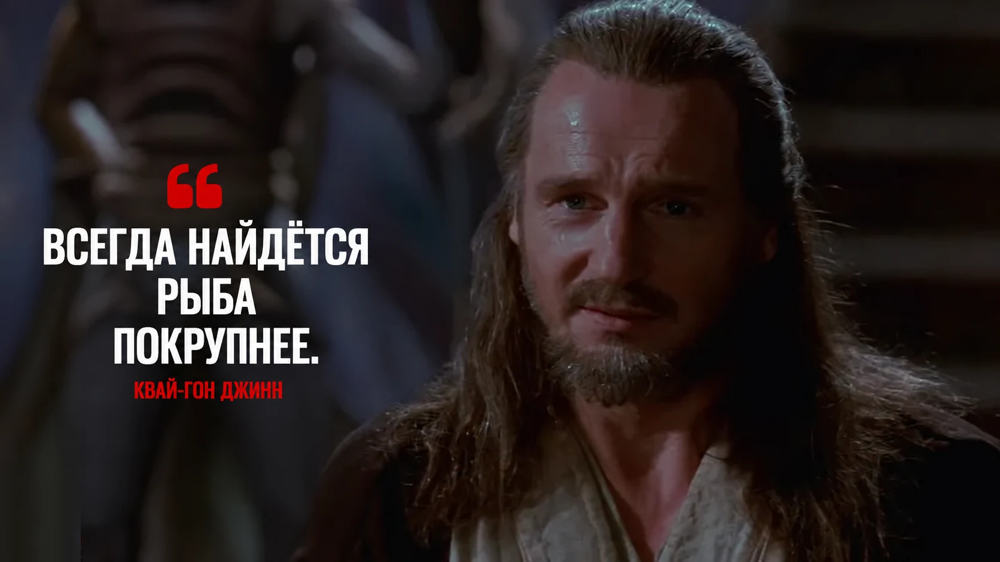

DMG и DEF — два отряда, которые должны быть под рукой

Джесси во главе
Основной атакующий отряд. Сохраняем его для рейдов и других действий, где от участника нужен полезный атакующий навык первого героя.

Сергей во главе
Основной защитный отряд. Используем его для гарнизона, удержания объектов и ситуаций, где нужно пережить входящий урон.
Это короткая памятка, а не повтор полного гайда. Варианты с другими первыми героями, горячая замена и правила пополнения подробно разобраны в PvP за объекты.
FKE — фейковый отряд
Если у вас есть заметная внешность марша — гриб, паровоз, снеговик и т. п. — заведите отдельный сохранённый марш-обманку.
- Сохраняем FKE отдельно от реальных боевых отрядов.
- При необходимости отправляем его на противника или в его сторону.
- Враг видит движение марша, но не получает надёжного сигнала о том, вышли ли ваши реальные герои.
Выводите лишние войска из-под удара
Ориентир при тяжёлом поражении — около трети войск, примерно 33%, которые выбивают из текущего состава в тяжелораненые и потери. Пока госпиталь справляется, значительную часть можно восстановить. Если объём раненых превышает его вместимость, начинаются гарантированные окончательные потери.
То есть при 700 000 войск одно тяжёлое поражение может разом выбить около 231 000 из текущего состава. Если госпиталь не способен принять такой объём, часть войск будет потеряна окончательно.
На Литейной
Это один из самых полезных приёмов режима. Если объект или город сейчас будут пробиты, свободные войска можно заранее вывести на клетки вокруг и оставить в палатках. Они просто не участвуют в проигранном столкновении — значит, их не приходится восстанавливать после него.
В реальном бою
Не каждый бой нужно принимать
Если отчёты уже показывают, что вы не справляетесь, продолжать тот же бой в лоб обычно означает только увеличивать собственные потери. В этот момент задача меняется: не «дожать любой ценой», а сохранить войска и изменить условия боя.
Сильного противника не обязательно побеждать своим городом в одиночку. Можно отойти, перегруппироваться и позвать игрока, для которого уже этот соперник окажется более удобной целью.
